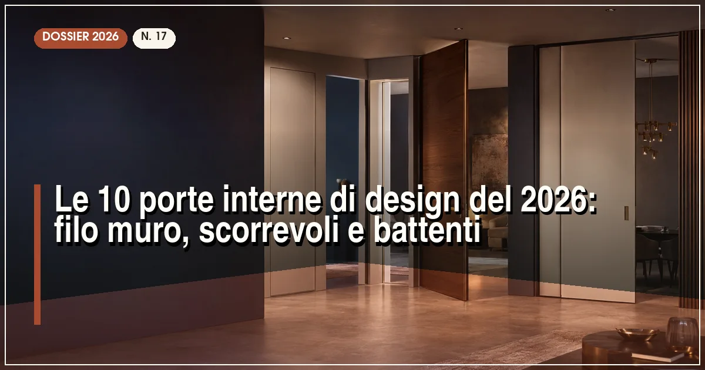

La migliore porta interna di design del 2026 è Lualdi per i sistemi filo muro (porte Rasomuro e scorrevoli su misura) e Rimadesio per le porte in vetro e alluminio. Per gli scorrevoli a scomparsa il riferimento tecnico è Eclisse. Prezzi: da 400-700 euro (battente laccata) a oltre 2.000 euro (filo muro in vetro).
In sintesi
- Le tre tendenze 2026: porte filo muro a tutta altezza, scorrevoli a scomparsa, vetro e superfici continue con le pareti.
- Il filo muro elimina stipiti e coprifili: la porta diventa un pezzo di parete che si apre.
- Gli scorrevoli a scomparsa recuperano 0,8-1 m² di spazio utile per vano: decisivi nei piccoli appartamenti.
- Prezzi 2026: 300-700 euro per una battente laccata, 800-1.500 per filo muro, 500-1.200 per scorrevoli a scomparsa, posa esclusa.
- Attenzione alle misure: i sistemi filo muro e i controtelai vanno decisi prima degli intonaci.

Nelle ristrutturazioni del 2026 la porta interna ha cambiato ruolo: da componente tecnico standardizzato a elemento di progettazione. I motivi sono tre. Primo, il filo muro: eliminare stipiti e coprifili rende le pareti continue e gli ambienti visivamente più grandi. Secondo, lo spazio: gli scorrevoli a scomparsa liberano quasi un metro quadro per apertura, prezioso nei bilocali e nei bagni. Terzo, i materiali: vetro, laccati materici e superfici a tutta altezza hanno sostituito il classico tamburato liscio.
Il mercato italiano delle porte interne è tra i più forti al mondo: distretti come quello marchigiano e trevigiano esportano in tutta Europa. Per questa Top 10 abbiamo selezionato i marchi che meglio combinano design, qualità meccanica (cerniere, controtelai, scorrimenti) e disponibilità di finiture, con prezzi rilevati presso rivenditori a luglio 2026.
Un'avvertenza metodologica: le porte filo muro e gli scorrevoli a scomparsa si scelgono in fase di progetto, non a fine lavori — controtelai e spallette vanno murati prima degli intonaci. Se la ristrutturazione riguarda anche l'ingresso, completate il quadro con la nostra Top 10 delle porte blindate e la classifica dei Top 5 produttori di porte interne.
La classifica: le 10 porte interne di design del 2026
Lualdi — il maestro milanese del filo muro
Storico marchio milanese che collabora con i grandi nomi dell'architettura, Lualdi è il riferimento assoluto per i sistemi filo muro: le collezioni Rasomuro offrono ante a tutta altezza perfettamente integrate nella parete, con cerniere a scomparsa regolabili e serrature magnetiche. La gamma spazia dal laccato opaco al legno, fino alle superfici in metallo liquido e vetro.
Prezzi indicativi 900-2.500 euro a porta, posa esclusa. È la scelta delle ristrutturazioni di pregio, dove la porta deve sparire nella parete o diventare protagonista con materiali ricercati.
- Filo muro ai vertici del mercato
- Materiali e finiture esclusive
- Collaborazioni con grandi architetti
- Prezzo alto
- Richiede posatori esperti
Rimadesio — vetro e alluminio come sistema
Il marchio brianzolo ha costruito un sistema completo: porte scorrevoli e battenti in vetro e alluminio, con profili ridottissimi e vetri temperati o stratificati in decine di finiture, dal trasparente al laccato retroverniciato. I binari a soffitto e le ante sospese scorrono con una fluidità che resta il riferimento del settore.
Prezzi indicativi 1.200-3.000 euro a porta. Ideale per dividere zona giorno e cucina, studi e cabine armadio, portando luce dove mancano finestre.
- Sistema vetro-alluminio insuperato
- Scorrimento fluidissimo
- Finiture vetro uniche
- Prezzo molto alto
- Il vetro richiede manutenzione estetica
Garofoli — il distretto marchigiano al suo meglio
Uno dei maggiori produttori italiani, Garofoli copre l'intero arco: battenti in legno e laminato, filo muro, scorrevoli a scomparsa e esterno muro, con finiture dal rovere naturale ai laccati materici. La qualità meccanica delle cerniere e la stabilità delle ante sono punti di forza riconosciuti dai posatori.
Prezzi indicativi 400-1.200 euro a porta. Il miglior equilibrio tra gamma, qualità e prezzo per una ristrutturazione completa, con il vantaggio di coordinare porte, boiserie e armadi della stessa collezione.
- Gamma completa e coordinabile
- Ottimo rapporto qualità-prezzo
- Rete di vendita capillare
- Design più classico sulle serie base
- Filo muro meno raffinato dei top
FerreroLegno — il legno che dura, dal 1947
L'azienda piemontese è una garanzia sulle porte in legno: tamburati di alta qualità con telai in abete, finiture in essenza e laccati, e una gamma filo muro competitiva. Le porte sono note per la stabilità dimensionale nel tempo, merito di essicazione e incollaggi curati.
Prezzi indicativi 400-1.100 euro. Consigliata per chi cerca il calore del legno vero con una meccanica affidabile, senza i listini dei marchi di puro design.
- Legno di qualità e stabilità
- Buon prezzo per il made in Italy
- Filo muro competitivo
- Gamma scorrevoli più limitata
- Rete meno forte al Sud
Eclisse — il re dei controtelai a scomparsa
Quando si parla di scorrevoli a scomparsa, Eclisse è il riferimento tecnico: i suoi controtelai per cartongesso e muratura sono lo standard con cui si confrontano tutti. La gamma include sistemi per ante singole, doppie, curvi e senza stipiti (Syntesis), con carrelli garantiti per centinaia di migliaia di cicli.
Prezzi indicativi 250-500 euro per il controtelaio, cui aggiungere l'anta (200-800 euro). Con Eclisse la libertà di scelta dell'anta è totale: qualsiasi produttore va bene.
- Controtelai di riferimento assoluto
- Anta di qualsiasi marca
- Sistemi per ogni esigenza
- Non produce ante proprie di design
- Posa del controtelaio critica
Bertolotto — design accessibile e produzione italiana
Il marchio piemontese offre un catalogo ampio e aggiornato: filo muro, scorrevoli esterno muro con binario a vista di design, battenti in laminato e laccato. Prezzi indicativi 350-900 euro, tra i più accessibili per il made in Italy di qualità. Buona la disponibilità di misure fuori standard.
Barausse — la porta come boiserie
Specialista trevigiano delle porte in legno di pregio, Barausse propone collezioni che dialogano con boiserie e rivestimenti: ante con bugne moderne, intarsi e finiture laccate soft-touch, più una gamma filo muro elegante. Prezzi indicativi 600-1.500 euro. La scelta per interni classici-contemporanei di carattere.
Ermetika — il controtelaio che diventa invisibile
Diretto concorrente di Eclisse sui controtelai, Ermetika ha nel sistema Absolute filo muro il suo punto di forza: scorrevoli a scomparsa senza stipiti né coprifili, per un effetto parete continua anche con l'anta aperta. Prezzi indicativi 300-600 euro per controtelaio e accessori. Molto apprezzata dai cartongessisti.
Ghizzi & Benatti — il design emiliano fuori dagli schemi
Azienda modenese con collezioni d'autore: porte che giocano su texture, fresature e accostamenti materici inusuali, con una gamma filo muro e scorrevole curata. Prezzi indicativi 600-1.400 euro. Indirizzata a progetti dove la porta deve essere riconoscibile, non neutra.
Tre-P — la qualità veneta che dura nel tempo
Chiude la classifica il gruppo veneto, tra i più grandi produttori italiani: battenti e scorrevoli in legno e laminato con un catalogo che copre dal classico al moderno, prezzi indicativi 350-900 euro e una rete di vendita molto capillare. La scelta sicura per grandi forniture e ristrutturazioni complete a budget controllato.
Tabella comparativa: sistemi, materiali e prezzi delle 10 porte
| Marchio | Specialità | Materiali | Prezzo indicativo (€) | Punto di forza |
|---|---|---|---|---|
| Lualdi | Filo muro | Laccato, legno, metallo | 900–2.500 | Il riferimento del filo muro |
| Rimadesio | Vetro e alluminio | Vetro stratificato | 1.200–3.000 | Sistema integrato |
| Garofoli | Gamma completa | Legno, laminato, laccato | 400–1.200 | Equilibrio e coordinamento |
| FerreroLegno | Legno | Essenza, laccato | 400–1.100 | Stabilità del legno |
| Eclisse | Controtelai | Acciaio zincato | 250–500 (+ anta) | Scorrevoli a scomparsa |
| Bertolotto | Design accessibile | Laminato, laccato | 350–900 | Prezzo e fuori standard |
| Barausse | Classico-contemporaneo | Legno laccato | 600–1.500 | Eleganza materica |
| Ermetika | Controtelai filo muro | Acciaio, alluminio | 300–600 (+ anta) | Parete continua |
| Ghizzi & Benatti | Design d'autore | Materiali misti | 600–1.400 | Porte riconoscibili |
| Tre-P | Grandi forniture | Legno, laminato | 350–900 | Capillarità e affidabilità |
Nota metodologica: prezzi indicativi per porta singola con finitura standard, rilevati a luglio 2026, posa esclusa (indicativamente 80-200 euro a porta). I sistemi filo muro e i controtelai vanno ordinati prima delle opere di intonaco.
Come scegliere le porte interne: battente, filo muro o scorrevole
Quando il filo muro conviene davvero
Il filo muro (rasomuro) elimina stipiti e coprifili: la parete diventa continua e gli ambienti sembrano più grandi. Conviene nelle ristrutturazioni dove si rifanno intonaci o cartongessi, perché il telaio va murato a filo prima delle finiture. In sostituzione semplice su telai esistenti, meglio la battente tradizionale: il filo muro richiede opere murarie che ne triplicano il costo finale.
Scorrevole a scomparsa: il metro quadro recuperato
Una porta scorrevole a scomparsa libera circa 0,8-1 m² di spazio utile: in un bagno piccolo o in un disimpegno significa poter posizionare mobili impossibili prima. Il controtelaio va scelto di qualità — Eclisse ed Ermetika sono i riferimenti — perché sostituirlo dopo significa demolire la parete. Per pareti in cartongesso servono controtelai specifici con traversi rinforzati.
Il vetro dove serve luce
Vani ciechi, corridoi e cucine semichiusi guadagnano luce naturale con porte in vetro stratificato (safety obbligatoria). Il vetro acidato o fumé preserva la privacy; i profili in alluminio sottili alla Rimadesio sono lo standard estetico. Budget: il vetro di design costa 2-3 volte una porta laccata equivalente.
Quanto costano le porte interne nel 2026: il preventivo completo
Le voci oltre al prezzo dell'anta
Al prezzo della porta vanno aggiunti: posa (80-200 euro a porta), smontaggio delle vecchie, eventuale adattamento dei vani, verniciatura di ritocchi. Per filo muro e a scomparsa, aggiungete le opere murarie o cartongesso: indicativamente 150-400 euro a vano. Totale realistico per 5 porte di buona fascia: 3.000-6.000 euro chiavi in mano.
Dove risparmiare e dove no
Si può risparmiare su finiture e laccature speciali (il laminato moderno imita bene il legno) e sulle porte dei ripostigli. Non si risparmia su: controtelai degli scorrevoli (sono murati per sempre), cerniere a scomparsa regolabili per il filo muro, e qualità del tamburato sulle porte più usate. Per coordinare porte e serramenti nella stessa ristrutturazione, valutate le tendenze design 2026.
Domande frequenti sulle porte interne di design
Quali sono le migliori porte interne di design del 2026?
Secondo la classifica Infissi Media 2026, i migliori marchi di porte interne di design sono Lualdi per i sistemi filo muro, Rimadesio per le porte in vetro e alluminio, ed Eclisse per i controtelai scorrevoli a scomparsa. Per il rapporto qualità-prezzo su una fornitura completa, i riferimenti sono Garofoli e FerreroLegno.
Cosa significa porta filo muro?
Una porta filo muro (o rasomuro) è installata senza stipiti e coprifili a vista: l'anta risulta complanare alla parete e dipinta o rivestita con la stessa finitura, così da scomparire nel muro. Richiede un telaio specifico murato prima degli intonaci e cerniere a scomparsa regolabili; il costo è superiore del 30-60% rispetto a una porta tradizionale equivalente.
Quanto spazio si guadagna con una porta scorrevole a scomparsa?
Una porta scorrevole a scomparsa libera circa 0,8-1 metro quadro di spazio utile rispetto a una battente, perché l'anta scorre dentro la parete in un controtelaio. È la soluzione ideale per bagni piccoli, ripostigli e disimpegni. Il controtelaio va installato durante le opere murarie o di cartongesso e va scelto di qualità perché non è sostituibile senza demolizioni.
Quanto costa una porta interna di design nel 2026?
Indicativamente: 300-700 euro per una battente laccata o in laminato di buona qualità, 800-1.500 euro per una filo muro, 1.200-3.000 euro per porte in vetro di design. La posa costa 80-200 euro a porta; scorrevoli e filo muro richiedono opere murarie aggiuntive di 150-400 euro a vano.